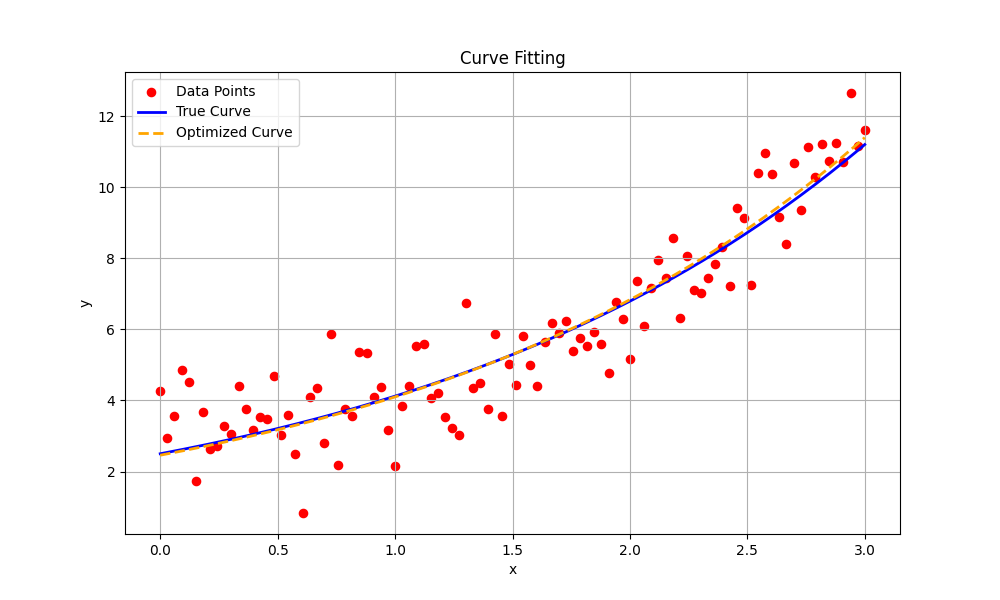

Note
Go to the end to download the full example code.
Curve fitting#
This example shows how to fit a curve to a set of data points using pysolve-gn. We will use the Gauss-Newton method to minimize the residuals between the observed data points and the curve defined by a parametric function.
Define the model function#
First, we will define the model function that represents the curve we want to fit. In this example, we will use an exponential function defined as:
import numpy as np
import matplotlib.pyplot as plt
import pysolvegn
np.random.seed(0)
# Define the model function
def model(params, x):
a, b = params
return a * np.exp(b * x)
# Generate synthetic data points
x_data = np.linspace(0, 3, 100)
true_params = [2.5, 0.5] # True parameters for the curve: y = a * exp(b * x)
y_true = model(true_params, x_data)
y_data = y_true + 0.5 * np.random.normal(size=y_true.shape) # Add noise to the data
Create the residual and Jacobian functions#
Secondly, we will define the residual function, and the Jacobian function. The residual function computes the difference between the observed data points and the model predictions, and the Jacobian function computes the derivatives of the residuals with respect to the parameters.
This equation is called a term in pysolve-gn, and it represents a single
component of the optimization problem. See pysolvegn.Term for more details
on how to define terms in pysolve-gn.
# Define the residual function
def residual_function(params, x, y):
return model(params, x) - y
residual_func = lambda params: residual_function(params, x_data, y_data)
# Define the Jacobian function
def jacobian_function(params, x):
a, b = params
J = np.zeros((len(x), len(params)))
J[:, 0] = np.exp(b * x) # Derivative with respect to a
J[:, 1] = a * x * np.exp(b * x) # Derivative with respect to b
return J
jacobian_func = lambda params: jacobian_function(params, x_data)
data_term = pysolvegn.Term.from_rJ(
residual_func=residual_func, jacobian_func=jacobian_func, loss="linear", weight=1.0
)
Perform curve fitting#
Now we can use the pysolvegn.solve() function to perform the curve fitting.
We will provide the term object and an initial guess for the parameters.
The function will return the estimated parameters that best fit the data.
# Initial guess for the parameters
initial_params = [2.0, 0.4]
result = pysolvegn.solve(
terms=[data_term],
x0=initial_params,
max_iteration=10,
xtol=1e-6,
ftol=1e-6,
verbosity=3,
)
print("Estimated parameters:", result)
y_retrieved = model(result, x_data)
Individual costs [rJ term]: C_i = 0.5 * ρ(||r_i||^2)
Cost: C = sum(w_i * C_i)
Step norm: ||Δp||
Optimality: ||g||
Iteration Total time (s) Cost C ΔC ||Δp||_2 ||g||_∞ ||Δp||_∞ ||g||_2 Cond(H) Trace(H) Cost C_0
0 6.335e-04 2.747e+02 2.037e+03 2.088e+03 1.745e+02 8.516e+03 2.747e+02
1 8.860e-04 3.587e+01 -2.389e+02 4.882e-01 1.106e+03 4.637e-01 1.121e+03 3.965e+02 2.727e+04 3.587e+01
2 1.088e-03 1.275e+01 -2.311e+01 4.206e-02 5.361e+01 4.204e-02 5.422e+01 3.529e+02 2.208e+04 1.275e+01
3 1.248e-03 1.268e+01 -7.435e-02 1.495e-02 3.749e-01 1.413e-02 3.749e-01 3.519e+02 2.178e+04 1.268e+01
4 1.395e-03 1.268e+01 -3.310e-05 9.676e-04 1.139e-02 9.513e-04 1.139e-02 3.520e+02 2.178e+04 1.268e+01
5 1.532e-03 1.268e+01 -3.624e-08 3.230e-05 3.960e-04 3.177e-05 3.960e-04 3.520e+02 2.178e+04 1.268e+01
[ftol] Convergence achieved (df < ftol * F) : 3.6238969158830514e-08 < 1.268019451067345e-05.
Estimated parameters: [2.48024441 0.50550361]
Plot the results#
# Display the results
plt.figure(figsize=(10, 6))
plt.scatter(x_data, y_data, label="Data Points", color="red", s=20)
plt.plot(x_data, y_true, label="True Curve", color="blue", linewidth=2)
plt.plot(
x_data,
y_retrieved,
label="Fitted Curve",
color="green",
linestyle="--",
linewidth=2,
)
plt.title("Curve Fitting using Gauss-Newton Method")
plt.xlabel("x")
plt.ylabel("y")
plt.legend()
plt.grid()
plt.show()

Total running time of the script: (0 minutes 0.084 seconds)